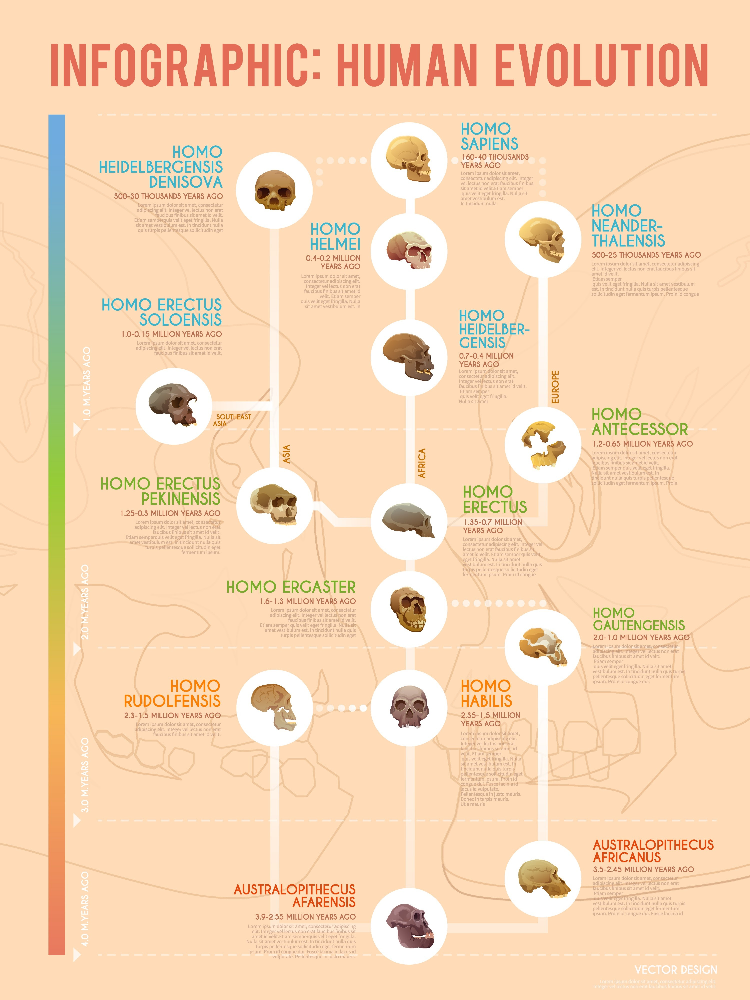
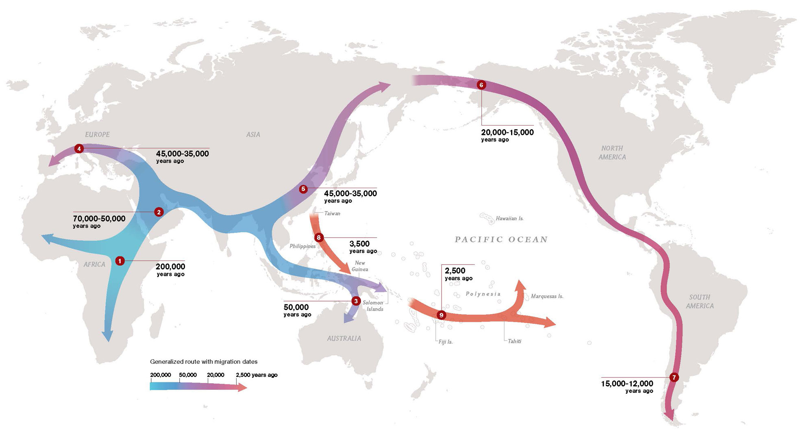

▼目次
進化人類学（Evolutionary Anthropology）は、チャールズ・ダーウィンが提唱した進化理論を基盤とし、ヒトがいかにして現在の形態と能力を獲得するに至ったかを探究する分野である。比較ゲノム学や古生物学の手法を用い、他の生物種、特に近縁な霊長類との差異を分子レベルおよび表現型レベルで明らかにする。
たとえば直立二足歩行の獲得は骨格構造に劇的な変化をもたらし、それに伴う産道の変化や脳容積の拡大は、人類特有の繁殖戦略や生活史（ライフヒストリー）を形作った。進化人類学は、人類の形質がいかなる環境圧の下で選択されてきたのかを、数100万年のタイムスケールで検証する。
進化人類学において、古代ゲノム学（Paleogenomics）の発展は革命的であった。ネアンデルタール人やデニソワ人の全ゲノム配列が解読されたことで、現生人類との交雑の事実が明らかになり、ヒトの進化が単一の系統樹ではなく、複雑に絡み合った網目状のプロセスであることが証明されている。

人類の歴史を語る上で欠かせないのが、アフリカ大陸を起点とする人類の世界移動（Great Journey）である。分子人類学の進展は、ミトコンドリアDNAやY染色体のハプログループ解析を通じ、わたしたちの祖先がいかにして地球全土へと拡散していったかの詳細な地図を提示した。
アフリカ単一起源説と出アフリカの動態
現生人類（ホモ・サピエンス）は約20万年から30万年前のアフリカに出現したとされる。この時期に生じた遺伝的なボトルネック（瓶首効果）が、現生人類の遺伝的多様性が他の霊長類（チンパンジー等）に比べて極めて低いことの要因となっている。
約6万年前、人類の一部はアフリカを離れ、ユーラシア大陸へと進出した。単なる地理的な拡張ではなく、未知の病原体、激しい気候変動、そして先行してユーラシアに居住していた旧人（ネアンデルタール人やデニソワ人）との遭遇を伴う、極めて過酷な適応プロセスであったと推測されている。
遺伝的交雑と環境適応
近年の古代ゲノム研究は、出アフリカ後のホモ・サピエンスがネアンデルタール人等と交雑し、彼らの持つ免疫関連遺伝子や環境適応遺伝子を取り込んでいたことを明らかにした。例えば、チベット高地に住む人々が持つ高地適応遺伝子（EPAS1）は、デニソワ人由来である可能性が高いことが示されている。これは、人類の移動が単なる個体の移動ではなく、遺伝情報の交換と、それによる急速な環境適応の歴史であったことを物語っている。

霊長類研究（Primatology）は、チンパンジー、ボノボ、ゴリラ、オランウータンなどの類人猿をはじめとする大型霊長類全般の生態・行動・認知能力を野外観察や行動実験で調査する分野である。
日本は今西錦司以来の伝統を持つ霊長類研究の先駆的な存在で、個体識別に基づいた長期的な観察研究で世界をリードしてきた。
社会構造の分析： 霊長類が見せる群れの形成、順位制、協力行動、そして「政治」とも呼べる互恵的な関係は、人類の社会性の原型を示唆している。
文化の萌芽： 道具の使用や特定の採餌技術が世代を超えて伝播する現象は、かつて人類固有のものと考えられていた「文化」が、生物学的な基盤の上に連続的に存在することを示している。
霊長類研究から得られる知見は、ヒトの攻撃性や共感性、さらには言語の起源といった複雑な問いに対し、比較行動のエビデンスを人類研究へ提供する。
古人類学（Paleoanthropology）は、化石骨や遺物を通じ、過去に存在した人類の直接的な祖先および近縁種の形態的進化を研究する。アフリカのサバンナで発見されたアウストラロピテクスから、ホモ・ハビリス、ホモ・エレクトスを経てホモ・サピエンスに至るまで、人類の身体がいかに変容したかを化石分析、年代測定で証明する。
3Dスキャン技術とバイオインフォマティクスの導入により、化石の欠損をデジタル的に復元し、筋肉の付着部位から運動能力をシミュレーションする学問へと変貌した。
古人類学が注目する主要な形質変化は以下の通りである。
直立二足歩行の確立：
直立二足歩行は、人類を他の類人猿から分かつ決定的な形質である。これに伴う骨盤の碗状化、大後頭孔の下方移動、足裏のアーチ構造の形成は、長距離移動におけるエネルギー効率を飛躍的に高めた。この歩行様式の獲得こそが、前述した「人類の世界移動」を可能にした物理的基盤である。
脳容積の増大： 特に前頭葉の発達と、それに伴う頭蓋骨の変容。
人類の進化において最も顕著な特徴は、脳容積の劇的な増大である。アウストラロピテクス期の約400〜500ccから、ホモ・サピエンスの約1350ccへの拡大は、エネルギー効率の面で大きなリスクを伴う。この難題を解決したのが、火の使用による食物の調理と、肉食による高タンパク・高カロリー摂取への移行である。古人類学は、歯の同位体分析を通じて、当時の食生の変化を精密に特定し、脳の進化を支えた代謝メカニズムを解明している。
歯と顎の退縮： 火の使用や調理技術の普及に伴う、咀嚼筋と歯の小型化。
古人類学は、地質学や年代測定学（放射性炭素測定、カリウムーアルゴン法など）と密接に連携し、人類がどのような環境変動（気候乾燥化など）に対応して進化してきたかを動的に描き出す。
人類が地球上のあらゆる環境（高地、極圏、熱帯など）に適応できたのは、優れた生態機構（Ecological
Mechanism）を備えているためである。これには、生理学的な調節機能や代謝システムが含まれる。生理学実験、環境応答解析を通じて、人類がどのようにして外部環境の変動（温度、酸素濃度、食物資源の変化など）に対応し、内部環境の恒常性（ホメオスタシス）を維持しているかを解明する。
今日では生物学よりもむしろ医学分野において「生理学」「病理学」「解剖学」として詳細な確立の著しい分野である。
人類の生態機構は、短期的・長期的な環境変化に対して多層的な反応を示す。
体温調節：
ヒトは、他の哺乳類に類を見ないほど発達したエクリン腺（汗腺）を全身に備えている。これにより、激しい運動時でも気化熱による効率的な体温降下が可能となった。この生態機構は、初期人類が炎天下のサバンナにおいて、獲物を執拗に追いかけ回す「持続狩猟」を可能にした。生物学的に見れば、ヒトの体毛の喪失と発汗機能の向上は、持続的な熱放出を可能にするための特化進化である。
高地適応： チベットやアンデスの居住民に見られる、低酸素状態での血中酸素運搬効率の向上。これは数千年のスパンで生じた遺伝的適応の一例である。
消化系の進化： デンプンを分解するアミラーゼ遺伝子のコピー数増加は、農耕開始以降の食生活の変化に適応した結果である。
このように、生態機構の研究は、ヒトの身体がいかに環境と相互作用し、ホメオスタシス（恒常性）を維持しているかを、細胞・分子レベルから個体レベルまで網羅的に解明する。
先史人類学（Prehistoric
Anthropology）は、文字記録が残る以前の時代を対象とし、人類の行動様式や社会組織を物質文化（石器、住居跡など）と人骨の両面から遺跡発掘、骨化学分析を調査手法として再構成する。
この分野は人類が「生物学的進化」だけでなく「文化的進化」によって環境に適応し始めた過程を追跡できる点に特徴がある。
たとえば寒冷地への進出において、人類は体毛を濃くするという生物学的形態変化を待たず、衣服を作る、火を管理するという文化的手段によって適応した。
先史人類学の研究手法を用い、遺跡から出土する人骨の同位体分析を行うことで、当時の食生活（栄養状態）や移動履歴を推定でき、集団の健康状態や生存戦略を生物学的に裏付けるデータを提供している。
近年注目されているのが、古代人骨に残された病原体のDNA解析（古代微生物学）である。
農耕の開始による定住化と人口密度の増大は、感染症の爆発的流行を招いた。先史時代の遺跡から発見されるペスト菌や結核菌の痕跡は、人類の社会構造の変化がいかに微生物相（マイクロバイオーム）を変容させ、それがまた人類の遺伝的抵抗力の進化を促したかを証明している。社会人類学的な集団形成の様態が、生物学的な生存率を左右するダイナミズムがここにある。
ヒトの高度な社会性は、大きな脳を維持するためのエネルギーコスト、そして直立二足歩行に伴う産道の狭窄が生んだ「二次的早産」という生理的制約から導き出された。ヒトの赤ん坊は極めて未熟な状態で生まれ、長期間の養育を必要とする。この「共同養育」の必要性が、血縁淘汰を超えた協力関係や、複雑な社会組織を形成する生物学的インセンティブとなったのである。
「婚姻制度」や「互恵的利他主義」は、生物学的には遺伝子の生存確率を高めるためのシステムとして解釈できる。例えば、乳糖不耐症の克服（ラクターゼ活性の持続性）という遺伝的変異は、牧畜という文化的営みが先行し、それが生存に有利に働く環境圧となったことで集団内に広まった。これは「文化・遺伝子共進化論」と呼ばれ、社会人類学的な事象が生物学的な進化を加速させる好例である。
歯のエナメル質に含まれるストロンチウムや酸素の同位体比を分析することで、その個体が幼少期をどこで過ごし、生涯でどのような移動を行ったかを個体レベルで特定できるようになった。これにより、先史時代の婚姻に伴う集団間の個体移動（通婚圏）や、季節的な遊動の範囲が科学的に可視化されている。
このほか空間スケーリングをさらに細分化した「形態人類学／遺伝人類学／分子人類学」分野も存在するが、別項で「形態生物学」「遺伝（生物情報）研究」「生物分子研究」としてそれぞれ紹介する。